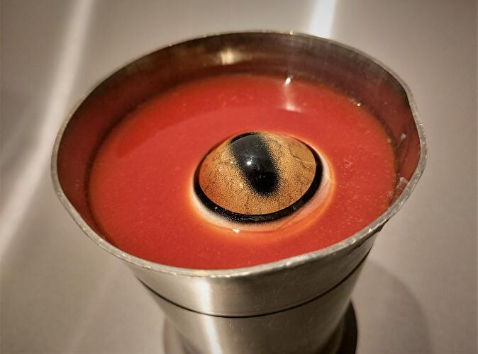
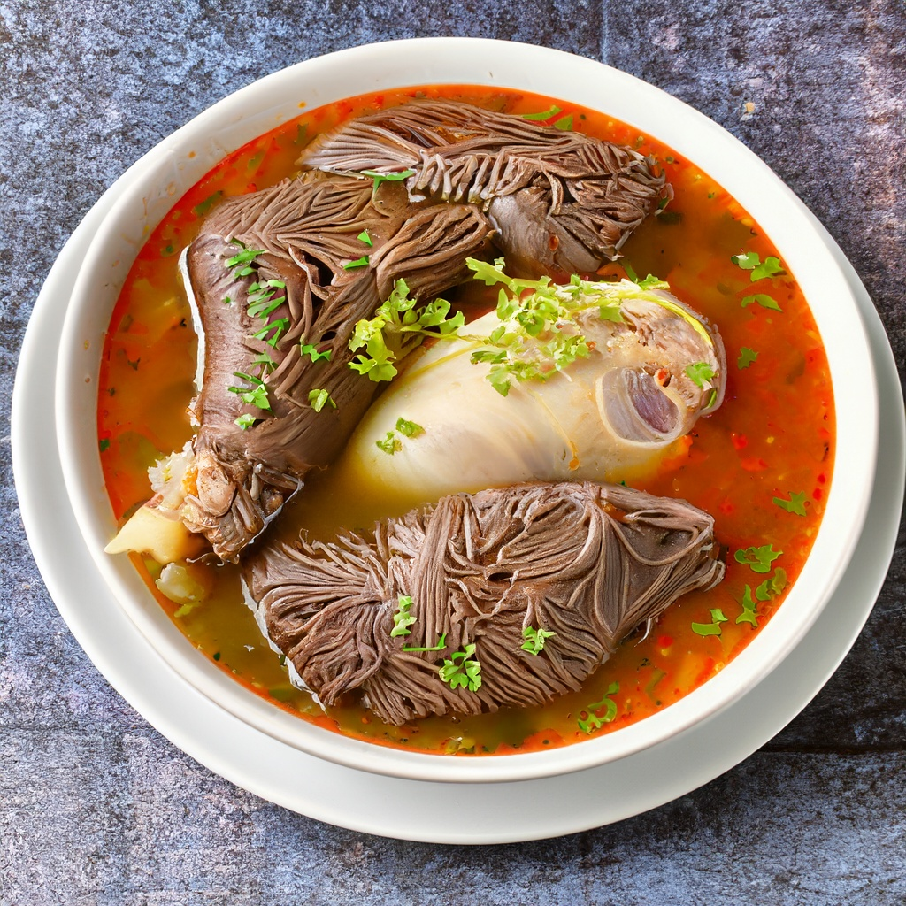

Fulteroogsoep is een van de bekendste Roxaanse gerechten, kwa uiterlijk en kwa smaak. Natuurlijk valt het oog van de Fultur, een kleine hagedissensoort, erg op. Maar de smaak is ook erg uniek en lekker. Door het eten van deze soep krijgt je mond echt te maken met een explosie van smaken!

Glurkse Drakensoep is ook een soepsoort met een oog er in. Dit oog bevat een sappige, zoete smaak die je smaakpupillen op hol laten slaan
